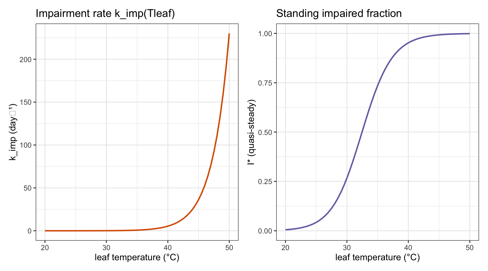
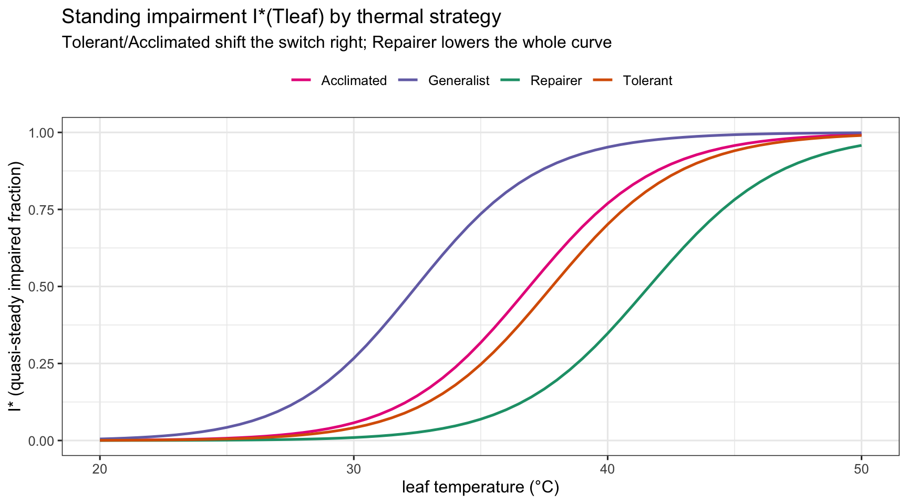
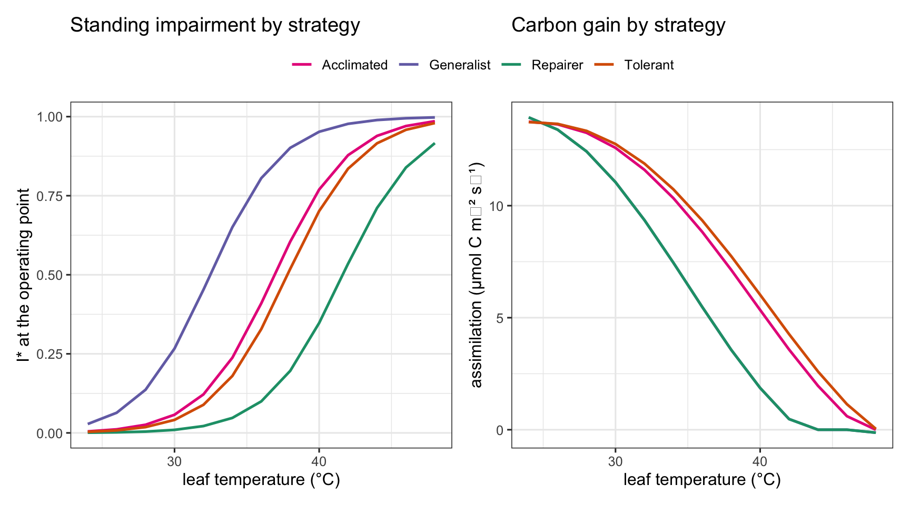
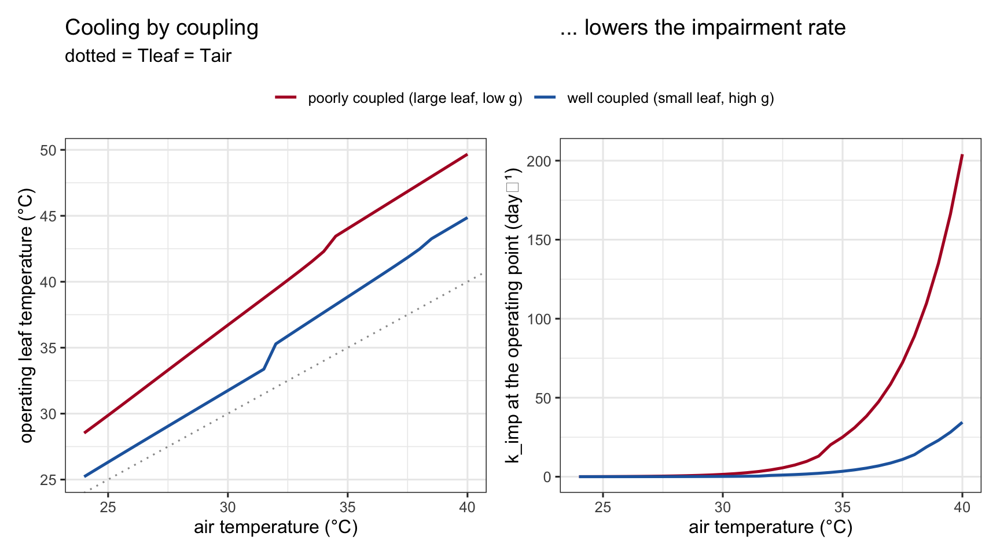
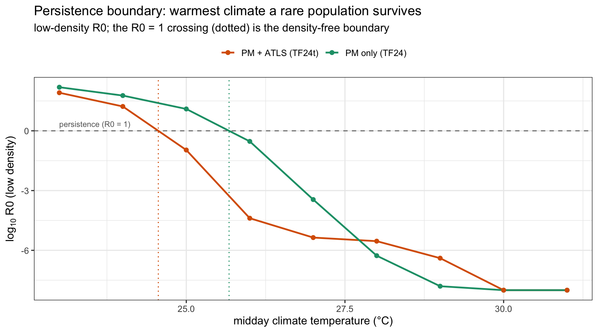
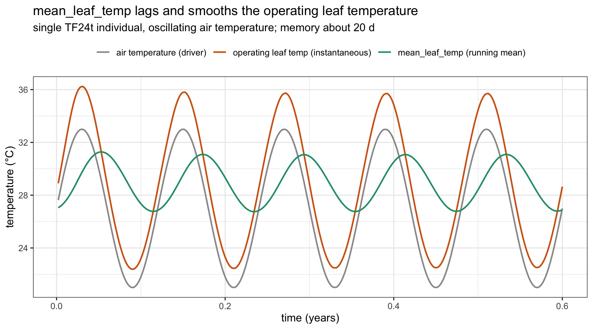

The leaf-level thermal response (ATLS), from one leaf to a stand
guide
Code
library(plant)library(ggplot2)library(patchwork)library(dplyr)library(tidyr)# Shared driving code, installed with plant and exercised by its# tests/testthat/test-atls-leaf-demo.R, so this page cannot silently rot.source(system.file("guide-helpers", "atls_demo_helpers.R", package ="plant", mustWork =TRUE))theme_set(theme_bw(base_size =12))# One colour per strategy archetype, reused across the document.strat_pal <-c("Generalist"="#7570b3", "Tolerant"="#d95f02","Repairer"="#1b9e77", "Acclimated"="#e7298a")# Cache for the expensive SCM runs within one render session. The page's# freeze is what persists results between renders; this only spares a rerun# when a chunk is re-executed interactively. Keyed on the cache name AND the# deparsed call, so editing a chunk's call invalidates that entry.cache_dir <-file.path(tempdir(), "tf24t-thermal-damage-cache")dir.create(cache_dir, showWarnings =FALSE, recursive =TRUE)cached_rds <-function(name, expr) { call_txt <-paste(deparse(substitute(expr)), collapse =" ") path <-file.path(cache_dir, paste0(name, ".rds"))if (file.exists(path)) { hit <-readRDS(path)if (identical(hit$call, call_txt)) return(hit$value) } value <- exprsaveRDS(list(call = call_txt, value = value), path) value}
The ATLS layer (leaf thermal damage, repair and acclimation, issue #566) gives a TF24 leaf a lasting response to heat on top of the reversible peaked-Arrhenius capacity curve. The leaf area is split into three fractions: functionalF, impairedI and damagedD, with F = 1 − I − D. Functional leaf is impaired at a rate k_imp(T) that a smooth switch turns on around its midpoint impair_Tmid (34.5 °C at the defaults, its own parameter, independent of the Jmax curve). Impaired leaf is repaired back to functional over about 4 days, or matures into damaged leaf, which clears only as the plant grows new leaf. Both capacities scale by F, so a cooled leaf does not rebound instantly.
The layer and its dynamics live in phylloptim’s Leaf behind use_thermal_damage_; the TF24t strategy turns it on, integrates the states on the plant, and dilutes damaged leaf with new growth. The equations are in TF24t: thermal damage.
A thermal strategy is a point in a four-axis trait space, all plugging into the same physics:
Axis
Knob
Moves
Tolerance (constitutive)
topt_offset
shifts the capacity optimum and the impairment switch up together
Acclimation (inducible)
A state
the same shift, induced when the regime is hot
Repair
preventive k_i, restorative k_rec
impair more slowly or repair faster (and cut the lasting floor)
Avoidance
transpirational cooling (energy balance)
lowers the operating leaf temperature, hence k_imp
This guide drives a single well-watered leaf, then a single-species stand. Its July design is notes/atls/implementation-plan.md and the port to phylloptim is notes/plan-atls-port.md, both in the history since they retired; what still constrains the code is hazard 16 in plant’s .claude/hazards.md, and the open work is on plant#566.
1. The impairment rate k_imp(Tleaf) and the impairment it drives
The generalist (default) leaf: the impairment rate sits near 0 when cold, passes through half of k_i at the switch midpoint ≈ 34.5 °C (impair_Tmid, marked), and saturates toward k_i when hot. Leaf temperature is prescribed here, so this is the pure mechanism with no optimiser in the loop.
The right-hand panel shows the standing impaired fraction this rate would drive, I* = k_imp / (k_imp + k_rec_eff + k_mat) (with D = 0): the balance the I ODE relaxes toward at a held temperature. A fresh leaf loses no capacity instantly; impairment is a memory that fills over days, and each unit of I or D removes that share of bothvcmax and jmax.
Code
Tleaf <-seq(20, 50, by =0.5)kimp_gen <-atls_k_imp_curve(Tleaf, atls_traits())I_gen <-atls_I_star_curve(Tleaf, atls_traits())onset <-atls_traits()$impair_Tmid # about 34.5 deg Cp_kimp <-ggplot(data.frame(Tleaf, k = kimp_gen), aes(Tleaf, k)) +geom_line(colour ="#d95f02", linewidth =0.9) +geom_vline(xintercept = onset, linetype ="dashed", colour ="grey50") +annotate("text", x = onset +0.4, y =0.02, label ="impair_Tmid", hjust =0,size =3, colour ="grey40") +labs(x ="leaf temperature (°C)", y ="k_imp (day⁻¹)",title ="Impairment rate k_imp(Tleaf)")p_I <-ggplot(data.frame(Tleaf, I = I_gen), aes(Tleaf, I)) +geom_line(colour ="#7570b3", linewidth =0.9) +ylim(0, 1) +labs(x ="leaf temperature (°C)", y ="I* (quasi-steady)",title ="Standing impaired fraction")p_kimp | p_I

2. Four thermal-response strategies move the impairment differently
Each archetype is a single-axis move off the generalist, shown as the standing impaired fraction I*(Tleaf). Tolerance and acclimation shift the switch (and hence I*) to higher temperature; repair (higher k_rec, lower k_i) lowers I* at a given temperature. Avoidance is not a curve shift — it lowers the operating temperature, shown in §4.
Code
strategies <-atls_strategies()I_curves <-bind_rows(lapply(names(strategies), function(nm) {data.frame(strategy = nm, Tleaf = Tleaf,I =atls_I_star_curve(Tleaf, strategies[[nm]]))}))ggplot(I_curves, aes(Tleaf, I, colour = strategy)) +geom_line(linewidth =0.9) +scale_colour_manual(values = strat_pal, name =NULL) +ylim(0, 1) +labs(x ="leaf temperature (°C)", y ="I* (quasi-steady impaired fraction)",title ="Standing impairment I*(Tleaf) by thermal strategy",subtitle ="Tolerant/Acclimated shift the switch right; Repairer lowers the whole curve") +theme(legend.position ="top")

3. Who keeps carbon where? Assimilation across a heat gradient
The payoff, on fresh leaves (I = D = 0, so the assimilation panel isolates the reversible-capacity effect). Tolerance and acclimation raise the capacity optimum (topt_offset, A), buying carbon at hot leaf temperatures; the standing-impairment panel shows where impairment would accrue over days.
Code
grad <-atls_solve_strategies(seq(24, 48, by =2), strategies,PAR =1500, VPD =2)p_grad_A <-ggplot(grad, aes(Tenv, A, colour = strategy)) +geom_line(linewidth =0.9) +scale_colour_manual(values = strat_pal, name =NULL) +labs(x ="leaf temperature (°C)", y ="assimilation (µmol C m⁻² s⁻¹)",title ="Carbon gain by strategy")p_grad_I <-ggplot(grad, aes(Tenv, I_star, colour = strategy)) +geom_line(linewidth =0.9) +scale_colour_manual(values = strat_pal, name =NULL) +labs(x ="leaf temperature (°C)", y ="I* at the operating point",title ="Standing impairment by strategy")(p_grad_I | p_grad_A) +plot_layout(guides ="collect") &theme(legend.position ="top")

4. Avoidance: transpirational cooling as the fourth axis
Avoidance is not a damage trait — it is the leaf keeping itself cooler than it would otherwise be by transpiring, through the Penman–Monteith energy balance (#523). A better-coupled leaf (smaller dimension d, higher conductance) runs closer to air temperature, so on a hot day it is impaired more slowly and carries less lasting damage. Both leaves here are the generalist; only the coupling differs.
Code
avoid_cfgs <-list("poorly coupled (large leaf, low g)"=atls_leaf_config(d =0.10, leaf_specific_conductance_max =2e-4),"well coupled (small leaf, high g)"=atls_leaf_config(d =0.02, leaf_specific_conductance_max =1e-3))avoid <-bind_rows(lapply(names(avoid_cfgs), function(nm) {bind_rows(lapply(seq(24, 40, by =0.5), function(Tair) { r <-atls_solve_cell(1500, Tair, 2, atls_traits(), pm =TRUE,cfg = avoid_cfgs[[nm]])data.frame(coupling = nm, Tair = Tair, Tleaf = r$Tleaf,k_imp = r$k_imp, A = r$A) }))}))avoid_pal <-c("poorly coupled (large leaf, low g)"="#b2182b","well coupled (small leaf, high g)"="#2166ac")p_av_T <-ggplot(avoid, aes(Tair, Tleaf, colour = coupling)) +geom_abline(slope =1, intercept =0, linetype ="dotted", colour ="grey60") +geom_line(linewidth =0.9) +scale_colour_manual(values = avoid_pal, name =NULL) +labs(x ="air temperature (°C)", y ="operating leaf temperature (°C)",title ="Cooling by coupling", subtitle ="dotted = Tleaf = Tair")p_av_k <-ggplot(avoid, aes(Tair, k_imp, colour = coupling)) +geom_line(linewidth =0.9) +scale_colour_manual(values = avoid_pal, name =NULL) +labs(x ="air temperature (°C)", y ="k_imp at the operating point (day⁻¹)",title ="... lowers the impairment rate")(p_av_T | p_av_k) +plot_layout(guides ="collect") &theme(legend.position ="top")

An isolated, poorly coupled leaf under high radiation runs far above the air — more than 20 °C above it across this sweep — so the absolute temperatures here are an upper bound; the contrast between couplings is the robust signal.
5. From one leaf to a community: persistence under warming (SCM)
Everything above is a single isolated leaf. The demographic question is whether the damage feedback changes whether a population persists. We run the size-structured community model (SCM) — a single-species patch under a constant climate, with the leaf_temp driver as the midday air temperature — across a warming gradient, TF24t against TF24 with the energy balance on.
How we measure fitness matters. The net reproduction ratio R0 at a fixed seed rain is not a valid cross-strategy comparison: it conflates per-capita productivity with density-dependent recruitment. A less fecund resident shades the patch less, so at a shared seed rain each of its seeds does better, inflating its R0 although it is the weaker plant.
The density-free measure is viability: when rare, does a resident more than replace itself? R0 is evaluated in the low-density limit (a small birth_rate). R0 ≥ 1 means the population grows from rare and persists. The warmest climate with R0 ≥ 1 is the persistence boundary, and that is comparable across strategies, because density effects vanish as density goes to zero. We read the boundary, never the R0 magnitude away from it.
Each SCM run takes one to two minutes; the page’s freeze keeps the results between renders, and the runs are spread across cores.
Code
# k_mat is a CALIBRATION TARGET. At its default (0.02/day) the permanent pool# ratchets -- maturation influx DAYS_PER_YEAR*k_mat ~ 7.3/yr against the only# sink, leaf turnover k_l ~ 0.46/yr -- which makes TF24t inviable in every# climate. This section uses the balanced k_l/DAYS_PER_YEAR ~ 0.00125/day, the# value the July runs used, so it is illustrative.atls_scm_kmat <-0.00125scen5 <-list("PM only (TF24)"=list(type ="TF24"),"PM + ATLS (TF24t)"=list(type ="TF24t",mutate =function(s) { s$k_mat <- atls_scm_kmat; s }))# The cache name carries k_mat: the scenario list (hence k_mat) hides behind the# `scen5` symbol, so the call text alone would not see a change to it.viab5 <-cached_rds(sprintf("scm-viability-k%.5g", atls_scm_kmat),atls_scm_viability(seq(23, 31, by =1), scen5))bound5 <-atls_persistence_boundary(viab5)knitr::kable(bound5, digits =1, row.names =FALSE,col.names =c("scenario", "persistence °C"))
scenario
persistence °C
PM + ATLS (TF24t)
24.7
PM only (TF24)
25.9
Code
b5 <-setNames(bound5$boundary, bound5$scenario)ggplot(viab5, aes(air_temp, pmax(log10(R0), -8), colour = scenario)) +geom_hline(yintercept =0, linetype ="dashed", colour ="grey50") +geom_vline(data = bound5, aes(xintercept = boundary, colour = scenario),linetype ="dotted", show.legend =FALSE) +geom_line(linewidth =0.9) +geom_point(size =1.8) +annotate("text", x =23, y =0.35, label ="persistence (R0 = 1)",hjust =0, size =3, colour ="grey40") +scale_colour_manual(values =c("PM only (TF24)"="#1b9e77","PM + ATLS (TF24t)"="#d95f02"), name =NULL) +labs(x ="midday climate temperature (°C)",y =expression(log[10] *" R0 (low density)"),title ="Persistence boundary: warmest climate a rare population survives",subtitle ="low-density R0; the R0 = 1 crossing (dotted) is the density-free boundary") +theme(legend.position ="top")

The valid signal is the persistence boundary — the dotted crossings, not the curve heights, which still carry the density artifact and are drawn on a log scale only to expose the crossing.
Reading these results. Adding the thermal layer moves the persistence boundary from 25.9 °C to 24.7 °C: lasting thermal damage is a net persistence penalty, as it was on the July code (notes/atls/results-2026-07/). The size of the shift rests on the illustrative k_mat above and on the other open calibration items listed at the end of this page.
6. Which thermal strategy persists hottest? (SCM tournament)
Same measure, now varying the strategy — each a heritable single-axis move off the generalist (tolerance = constitutive topt_offset; repair = higher restorative k_rec and lower preventive k_i; acclimator = faster acclimation kinetics). “Persists hottest” means the highest persistence boundary, not the R0 height at a shared seed rain.
Code
# Each strategy carries the balanced k_mat from section 5, so the ranking is not# swamped by the default permanent-damage ratchet.scm_strats <-atls_scm_strategies()scen6 <-setNames(lapply(names(scm_strats), function(nm) { base <- scm_strats[[nm]]list(type ="TF24t",mutate =function(s) { s <-base(s); s$k_mat <- atls_scm_kmat; s })}), names(scm_strats))viab6 <-cached_rds(sprintf("scm-viability-strat-k%.5g", atls_scm_kmat),atls_scm_viability(seq(23, 33, by =1), scen6))bound6 <-atls_persistence_boundary(viab6)bound6 <- bound6[order(-bound6$boundary), ]knitr::kable(bound6, digits =1, row.names =FALSE,col.names =c("strategy", "persistence °C"))
Reading these results. The order here is tolerant > repairer > acclimator > generalist. On the July code it was tolerant > repairer > acclimator > generalist, and tolerance and repair persisted hotter although their low-density R0 at cool climates was lower than the generalist’s — the inversion that is why the ranking is by the R0 = 1 crossing.
7. Memory: the running-mean leaf temperature
The sections above read the instantaneous operating leaf temperature. TF24t also carries a diagnostic ODE state, mean_leaf_temp, an exponential moving average of the operating-point Tleaf:
where T_ℓ is the operating-point leaf temperature (TF24’s Tleaf aux), k_mean_leaf_temp is the memory decay rate (day⁻¹; D = 365.25 puts it on the yearly clock), and the memory is 1/k_mean_leaf_temp. It is purely diagnostic — nothing reads it — so it is a clean read-out of the temperature history a plant has experienced. Below, a single TF24t individual is driven with an oscillating air temperature; the running mean lags and smooths the operating temperature (memory about 20 d here).
Code
traj_wide <-cached_rds("running-mean", { e <-"TF24_Env" k_mem <-0.05# day^-1, about a 20-day memory period <-0.12# yr (about 44 d), comparable to the memory t_end <-0.6# yr s <-TF24t_Model(); s$k_mean_leaf_temp <- k_mem p <-Individual("TF24t", e)(s) env <-Environment("TF24t")# The adaptive stepper can probe the driver just past t_end, so the driver is# set on a grid beyond the loop horizon; outside its range the spline would# extrapolate. t_drive <-seq(0, t_end *1.15, length.out =230) env$extrinsic_drivers_set_variable("leaf_temp", t_drive,27+6*sin(2* pi * t_drive / period))# Seeded as a node would be: storage, A at equilibrium, and the running mean# at the birth air temperature. p$set_initial_states(env) runner <- plant:::OdeRunner("TF24t")(plant:::IndividualRunner("TF24t", e)(p, env)) rec <-list()while (runner$time < t_end) { runner$step() ind <- runner$object$individual rec[[length(rec) +1L]] <-data.frame(time = runner$time,air_temp = env$extrinsic_drivers_evaluate("leaf_temp", min(runner$time, t_end)),operating = ind$aux("Tleaf"),running = ind$state("mean_leaf_temp")) }do.call(rbind, rec)})traj <- traj_wide |>pivot_longer(c(air_temp, operating, running), names_to ="series",values_to ="temp")series_lab <-c(air_temp ="air temperature (driver)",operating ="operating leaf temp (instantaneous)",running ="mean_leaf_temp (running mean)")series_pal <-c(air_temp ="grey60", operating ="#d95f02", running ="#1b9e77")ggplot(traj, aes(time, temp, colour = series)) +geom_line(linewidth =0.8) +scale_colour_manual(values = series_pal, labels = series_lab, name =NULL) +labs(x ="time (years)", y ="temperature (°C)",title ="mean_leaf_temp lags and smooths the operating leaf temperature",subtitle ="single TF24t individual, oscillating air temperature; memory about 20 d") +theme(legend.position ="top")

The running mean (green) tracks the operating leaf temperature (orange) with a lag set by k_mean_leaf_temp and a reduced amplitude. The operating temperature sits above the air because a lone plant in full light runs hot (§4); its jumps and plateaus near the air-temperature peaks are the leaf shutting its stomata, after which nothing cools it. mean_leaf_temp averages that operating signal, not the driver.
8. Summary
The impairment rate k_imp(Tleaf) is the single driver: strategies act by moving where its switch turns on (tolerance and acclimation shift the midpoint), how fast functional leaf is impaired and how fast it is repaired (preventive k_i, restorative k_rec), or where the leaf actually operates (avoidance). Impairment is a memory: the impaired and damaged fractions remove their share of both capacities and persist after cooling, and damaged leaf clears only as the plant grows new leaf. At the community scale the same layer sets a persistence boundary, the warmest climate at which a rare population still replaces itself. Its value and the strategy ranking (§5, §6) rest on open calibration items, among them the leaf overheating, the switch midpoint and the k_mat maturation rate. See plant’s notes/atls/gate-atls-vs-pm-evaluation.md for the July materiality gate.